Untuk mak ayah anak 3–6 tahun yang…
SYNAX, tablet kunyah manis buah dengan 3 mineral fosfat untuk sokong fungsi normal sistem saraf si kecil. Untuk 1–5 tahun, cuma 1 biji sehari. Anak ingat ini gula-gula. 🍓
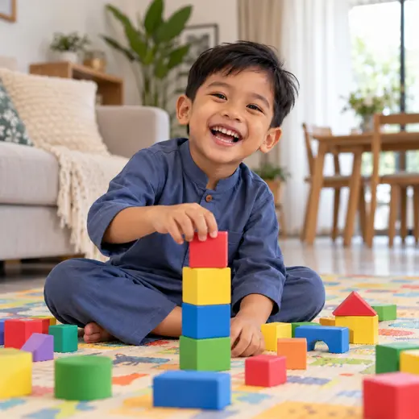
🍓 Rasa manis buah 👶 1 biji sehari“Baru guna seminggu, dah banyak perubahan. Dah kurang tantrum, senang tidur malam. Bangun pagi tak menangis, minat pergi sekolah.”Mak kepada anak prasekolah · WhatsApp pelanggan · ★★★★★
Saya Nak Cuba Untuk Si Kecil → Mula RM10 Set Percubaan · COD tersedia · Pemulangan 30 hariMak ayah anak kecil mesti faham…
Tekan mana-mana yang anda selalu lalui dengan si kecil. 😊
Anak kecil memang aktif, itu normal. Tapi kalau setiap hari jadi “perang kecil”, mak ayah boleh mula perhatikan rutin tidur, makan & nutrisi si kecil.
Kenapa umur 3–6 tahun sangat penting?
Setiap kali anak dengar cerita, sebut huruf atau main susun blok, berjuta sambungan saraf baru terbentuk. Proses ini perlukan mineral asas.
Kalium bantu isyarat saraf bergerak. Ini asas setiap gerak balas anak, dari bercakap sampai memegang pensel.
Kalsium terlibat di synapse, tempat maklumat berpindah antara sel saraf. Penting masa anak belajar & mengingat perkara baru.
Magnesium jadi “brek” semula jadi supaya saraf tak terlalu bertindak balas, membantu anak lebih tenang.
Bila rutin harian si kecil tak teratur, kesannya terasa pada…
Anak masuk sekolah rendah belum biasa duduk, dengar & ikut arahan cikgu.
Anak susah urus perasaan, mak ayah pun penat setiap hari.
Masa inilah anak kutip perkataan baru setiap hari dari persekitaran.
Tidur tak cukup buat esoknya meragam, dan kitaran ini berulang.
Skrin jadi “penenang” segera, tapi anak makin susah fokus pada aktiviti lain.
Tingkap emas ini tak berulang. Mula bina rutin yang baik dari sekarang.
Mak ayah dah buat yang terbaik. Betul!
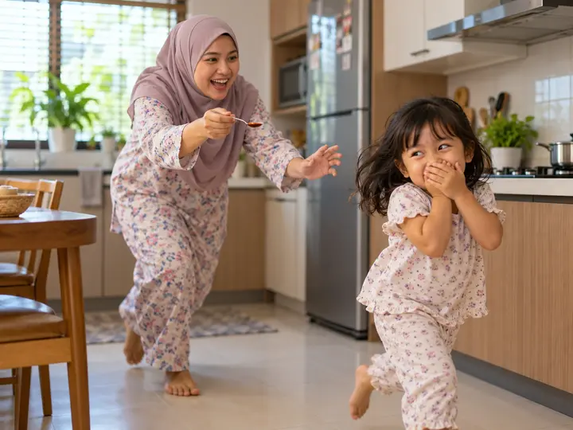
Penat, tak konsisten, anak tetap meragam…
Akhirnya, mak ayah yang menangis sama…
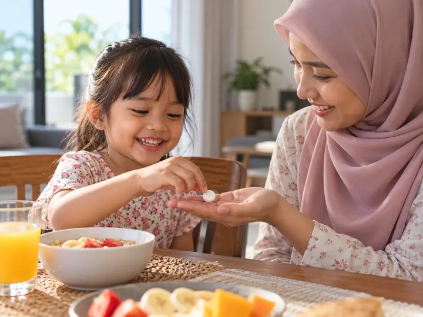
1 biji sehari, anak minta sendiri!
✦ Memperkenalkan…
Suplemen tablet kunyah dengan gabungan Kalsium Fosfat, Kalium Fosfat & Magnesium Fosfat untuk dijadikan sebahagian rutin harian anak.
Bukan campuran sembarangan
Tekan setiap mineral untuk tengok peranannya.
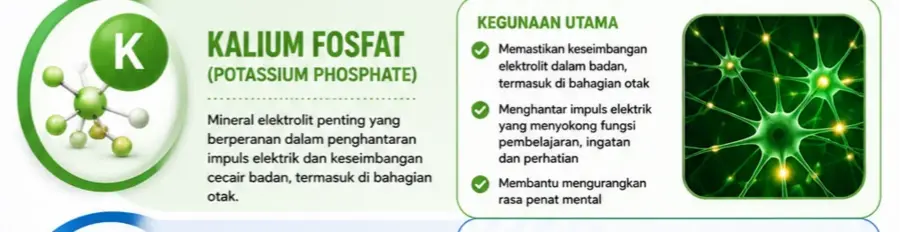
Isyarat saraf bergerak melalui pertukaran ion kalium-natrium merentasi membran sel saraf, asas kepada isyarat elektrik dalam otak.
Penghantaran isyarat kurang cekap. Anak nampak lambat bertindak balas, cepat penat bila kena fokus lama.
Isyarat saraf dihantar dengan lebih cekap dan stabil.
Kalsium mencetuskan pelepasan neurotransmitter di synapse, titik pertemuan antara sel saraf, asas kepada proses ingatan.
Penyampaian maklumat antara sel saraf kurang lancar. Proses mengingat dan memahami jadi lebih mencabar.
Synapse berfungsi dengan lebih baik, menyokong proses pembelajaran dan ingatan.
Magnesium bantu kawal keterujaan saraf, macam “brek” semula jadi supaya sistem saraf tak terlalu bertindak balas.
Saraf lebih mudah “over-reactive”. Anak nampak resah, susah nak tenang untuk fokus.
Sistem saraf lebih stabil, membantu anak kekal tenang dan fokus.
Penerangan berdasarkan peranan umum mineral dalam badan manusia. SYNAX ialah suplemen, bukan ubat, dan tidak bertujuan mendiagnosis, merawat atau menyembuhkan sebarang keadaan.
Setiap anak berbeza, tapi ini yang ramai mak ayah kongsi
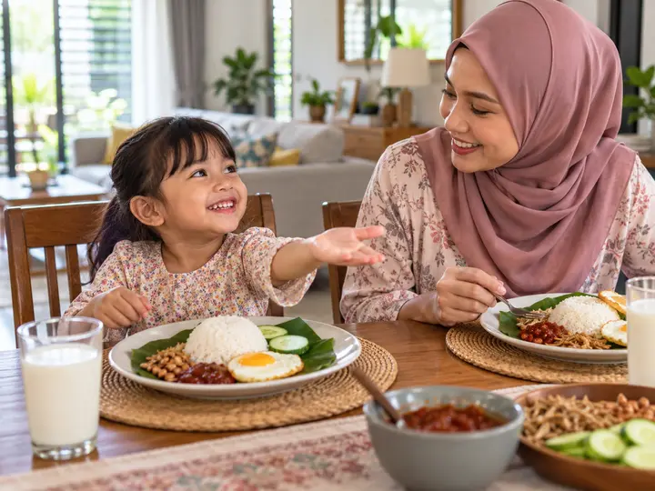
MINGGU 01Si kecil suka rasanya, tunggu “gula-gula” selepas sarapan. Rutin 1 biji sehari mula terbentuk.
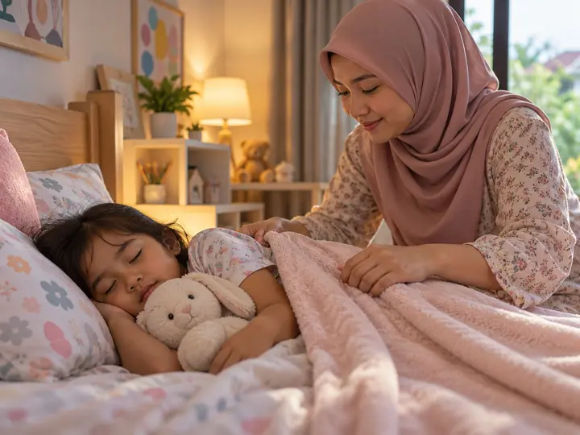
MINGGU 02Ramai mak ayah kongsi tidur malam lebih lena, bangun pagi kurang meragam.
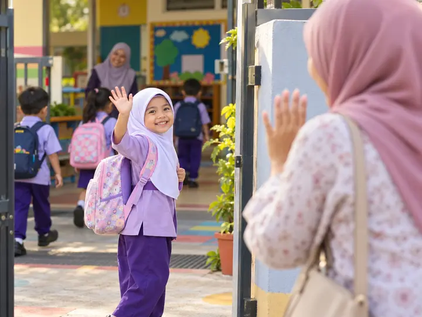
MINGGU 03–04Kurang tantrum, lebih mudah dipujuk & diajak berbual. Pagi ke tadika tanpa air mata.
Lebih lama duduk dengar cerita, seronok sebut huruf & nombor bersama mak ayah.
Ini bukan janji ajaib. Ia hasil rutin harian yang konsisten bersama tidur cukup, makan seimbang & masa bermain yang sihat. Pengalaman setiap anak berbeza.
Kisah sebenar mak ayah & atuk nenek
Lebih 40,000 testimoni. Ini antaranya.
📸 Tangkap layar sebenar dari pelanggan (tekan untuk besarkan)
“Kurang tantrum, senang tidur malam”
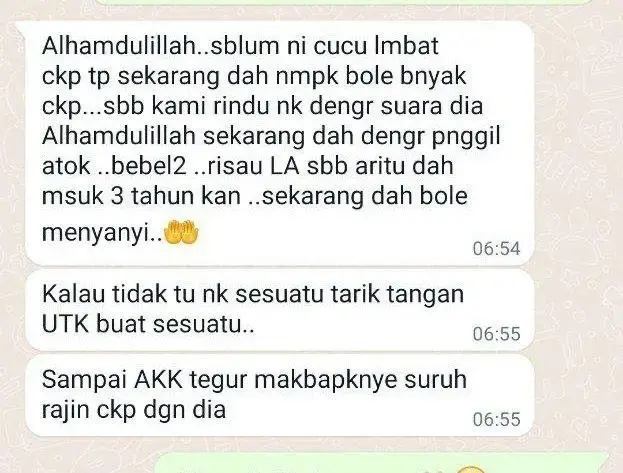
“Cucu 3 tahun, sekarang dah boleh menyanyi”
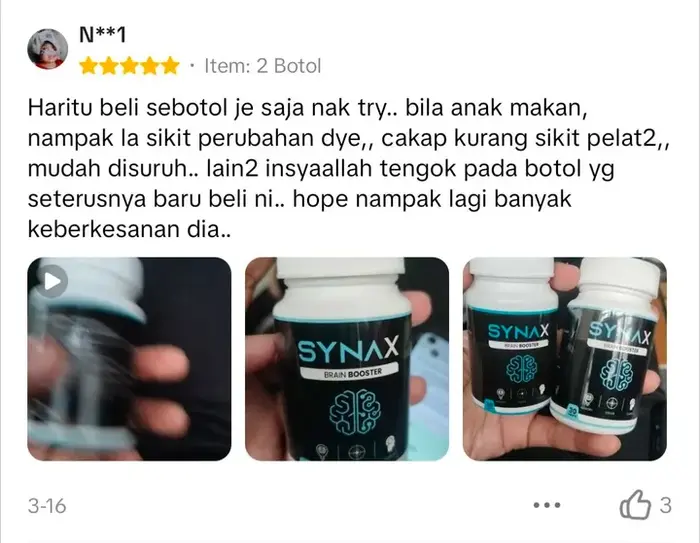
“Kurang sikit pelat, mudah disuruh”
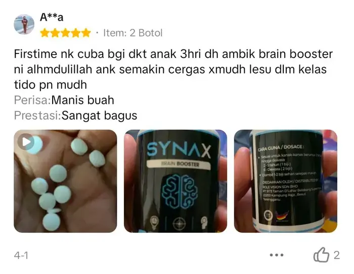
“Manis buah, makin cergas”
*Pengalaman setiap pelanggan berbeza dan bukan jaminan hasil yang sama. SYNAX bukan pengganti terapi pertuturan atau rawatan pakar. Tekan & tahan baris testimoni untuk berhenti.
Tutup mata. Bayangkan ini.
Si kecil hulur tangan, ambil sebiji, kunyah sambil senyum. Siap dalam 10 saat.
Manis buah yang lembut. Bagi si kecil, ini “gula-gula pagi”.
Hancur dengan mudah, tak berpasir, tak rasa “ubat”.
Rutin yang anak sendiri ingatkan mak ayah.
Satu hari si kecil
Tekan setiap waktu. Ada tip mudah untuk mak ayah sekali.
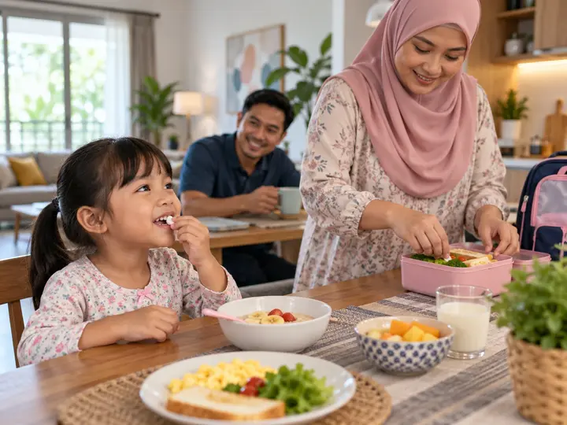
Bagi 1 biji SYNAX selepas sarapan. Pastikan anak duduk dan kunyah sampai habis di bawah pengawasan dewasa.
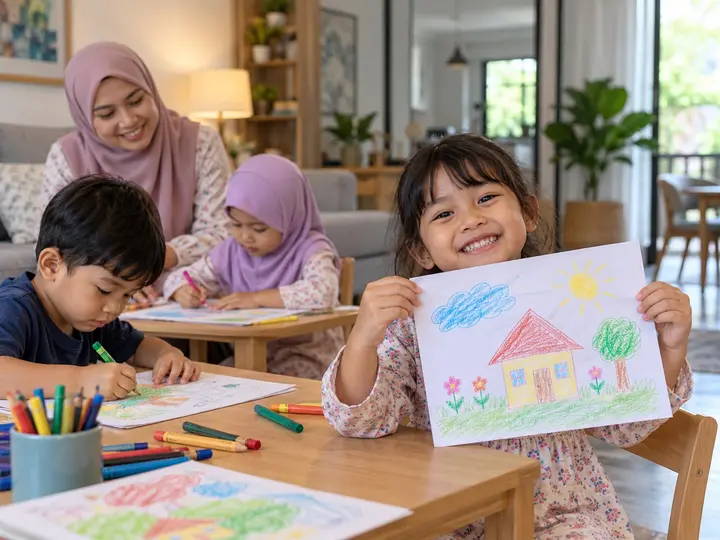
Masa inilah si kecil belajar ikut arahan, mewarna, menyanyi & bergaul dengan kawan.
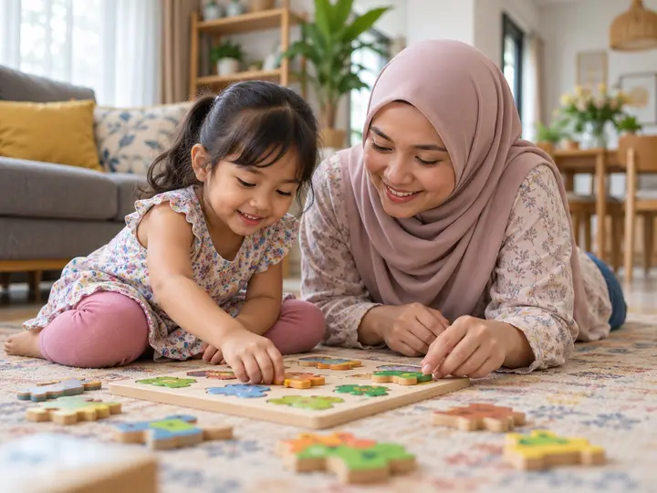
Main puzzle, susun blok & baca buku bergambar bantu anak latih fokus secara semula jadi.
Anak 3–5 tahun perlukan 10–13 jam tidur (termasuk tidur siang). Inilah masa otak membesar & berehat.
Cara yang betul adalah kunci
Ikut umur anak. Rujuk juga arahan pada label produk.
1 biji · selepas sarapan
Pastikan anak duduk dan kunyah sampai hancur, di bawah pengawasan dewasa.
30 biji ÷ 1 biji = ±30 hari
Pakej 4+1 (5 botol) cukup untuk ±150 hari, hampir 5 bulan rutin si kecil. Anak 6 tahun (2 biji sehari): ±75 hari.
Supaya anda beli dengan tenang
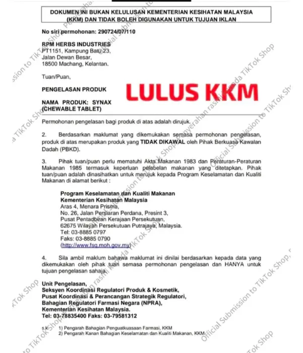
SYNAX diklasifikasikan sebagai produk makanan (tablet kunyah), bukan ubat. Sebab itu ia tidak memerlukan pendaftaran NPRA. Tekan untuk lihat surat.
Jadi, berapa pelaburan untuk mula?
Satu botol sirap vitamin kanak-kanak boleh cecah RM30–RM60, itu pun kalau anak nak minum. Untuk mula kenalkan SYNAX pada si kecil, anda cuma laburkan…
RM10
Set Percubaan 10 biji (±10 hari untuk 1–5 tahun) · atau serendah RM16 sebotol
Nak kenal dulu
10 biji · tengok si kecil suka atau tak
🔥 1K+ beli semula
30 biji · rutin sebulan
Beli 4 percuma 1
5 botol · ±5 bulan rutin
Ada juga pilihan lain:
Langkah terakhir
Isi maklumat di bawah. Tempahan dihantar terus ke WhatsApp kami untuk pengesahan. Tak perlu buat akaun.
Tekan butang di bawah untuk hantar mesej tempahan ke WhatsApp kami. Pasukan kami akan sahkan secepat mungkin.
💬 Buka WhatsApp & Hantar011-5308 7474Pilih “COD” semasa isi borang. Bayar tunai terus kepada rider bila SYNAX sampai depan pintu. Hujung bulan? Pilih COD Time Gaji, kami hantar dekat tarikh gaji anda.
Order Secara CODKami nak mak ayah beli dengan hati yang tenang. Hubungi kami jika:
Produk sampai dalam keadaan tak elok semasa penghantaran.
Yang sampai berbeza dengan SYNAX di halaman ini.
WhatsApp kami. 96% mesej dibalas dalam 24 jam.
FAQ
Label SYNAX ada arahan untuk kumpulan umur 1–5 tahun, iaitu 1 biji sehari. Pastikan anak duduk dan kunyah sampai habis di bawah pengawasan dewasa. Sila ikut arahan pada label produk.
Untuk 6–12 tahun, arahannya 2 biji sehari. Satu botol (30 biji) tahan ±15 hari, dan Pakej 4+1 tahan ±75 hari.
SYNAX ialah tablet kunyah berperisa manis buah. Ramai mak ayah kongsi anak ambil macam gula-gula. Kalau ragu, mula dengan Set Percubaan RM10.
Antara kandungannya ialah Kalsium Fosfat, Kalium Fosfat dan Magnesium Fosfat, dibuat daripada bahan semula jadi tanpa pewarna atau pemanis tiruan. Rujuk label untuk senarai ramuan lengkap.
Tidak. SYNAX ialah suplemen makanan, bukan ubat atau terapi. Jika anda risau tentang perkembangan pertuturan anak, dapatkan penilaian doktor atau ahli terapi pertuturan. SYNAX boleh dijadikan sebahagian rutin nutrisi harian bersama nasihat pakar.
SYNAX diklasifikasikan oleh KKM sebagai produk makanan (tablet kunyah), bukan ubat. Produk makanan tidak memerlukan pendaftaran NPRA. Surat pengelasan boleh dilihat di halaman ini.
Tidak. Setiap anak berbeza. SYNAX tidak menjamin sebarang perubahan tertentu. Ia paling baik diamalkan bersama tidur cukup, makan seimbang dan masa bermain yang sihat.
Dihantar dari Terengganu ke seluruh Malaysia, biasanya tiba dalam 2–3 hari bekerja. Tracking number dihantar melalui WhatsApp. COD tersedia.
Ada soalan lain? WhatsApp kami, kami balas secepat mungkin.
💬 WhatsApp KamiP.S. Risau si kecil tak suka? Mula dengan Set Percubaan RM10. Kalau ada masalah dengan produk, anda dilindungi pemulangan percuma dalam 30 hari.
P.P.S. Umur 3–6 tahun ialah tingkap emas yang tak berulang. Ramai pilih Pakej 4+1 (RM80, 5 botol), cukup ±150 hari untuk 1–5 tahun pada RM16 sebotol.
P.P.P.S. Teruskan peluk, bercerita & bermain dengan si kecil. Tambah satu rutin kecil: 1 biji SYNAX selepas sarapan. Biar senyuman si kecil yang tunjuk bezanya.
Pilih Pakej Anda Sekarang →